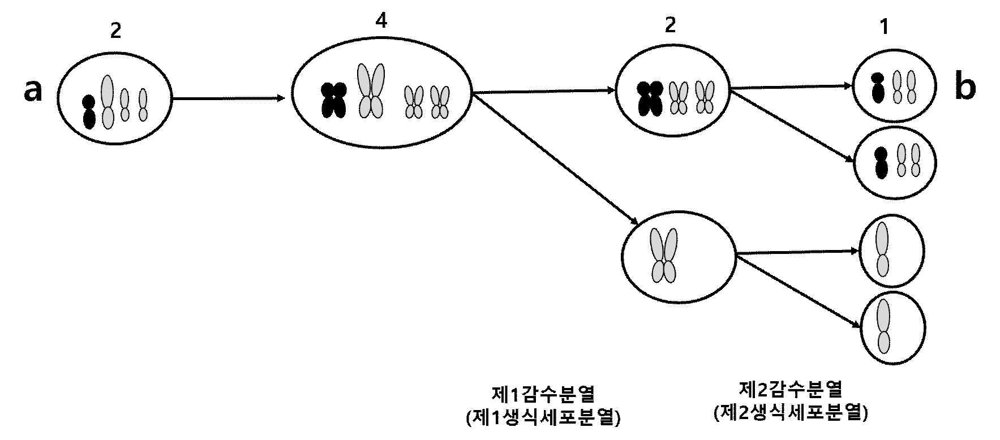
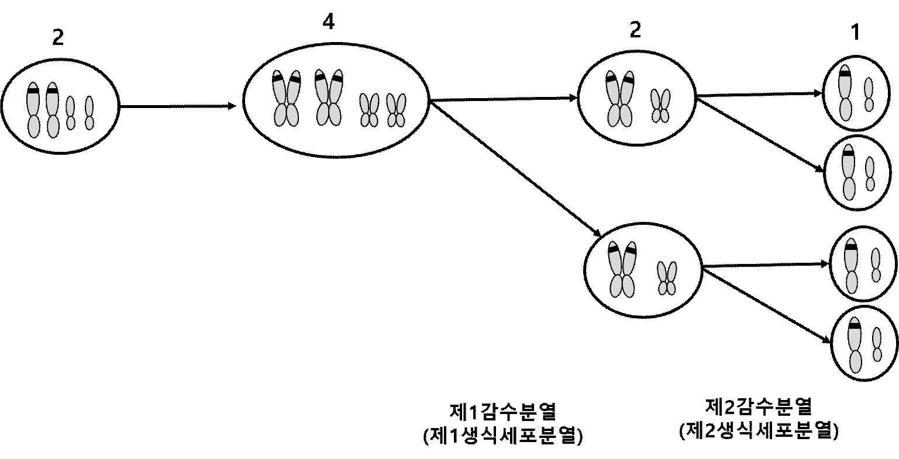
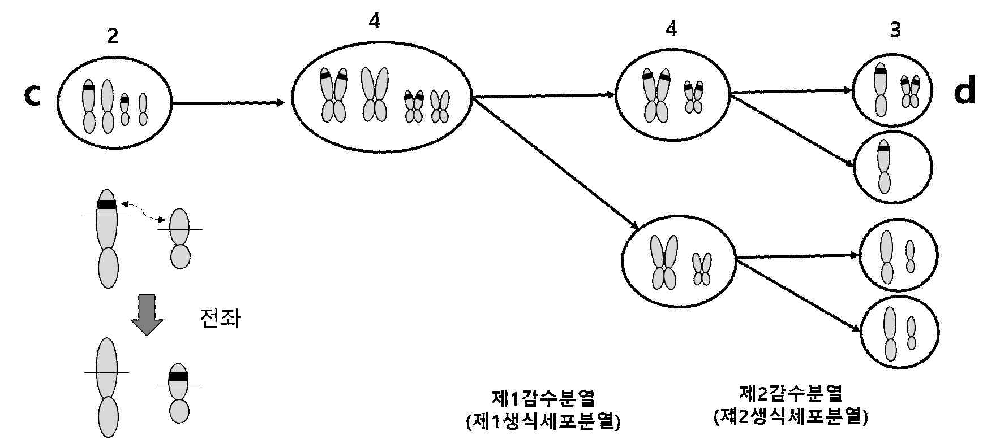

해설 2
2-1
정상 감수분열에 비해서 핵 1개당 DNA 상대량이 적기 때문에 이 세포에는 유전자 결실이 있다는 것을 알 수 있다.
그리고 나중에 세포 1개당 DNA 상대량이 증가하기 때문에 염색체 비분리로 염색체가 한쪽으로 몰렸고, 시기를 비교해보면 제1 생식세포분열(감수분열)중에 b세포쪽으로 염색체 비분리가 일어났다

2-2
생식세포분열과정의 상염색체상의 유전자는 아래와 같이 변화한다

그래프와 유사하게 값이 변화하기 위해서는 세포c에 전좌가 일어나야 함을 알 수 있다. 그리고 감수2분열, 제2생식세포 분열중에 딸세포 d로 비분리가 일어나서 n+1이 되었다.

[2-1 예시답안]
a세포는 염색체 결실을 가지고 있는 세포이고 감수1분열(제1생식세포분열)시기에 염색체 비분리로 n+1이 된 세포이다.
| 하위 문항 | 채점 기준 | 배점 |
|---|---|---|
| 2-1 | 1. 세포 a는 염색체 결실을 가지고 있다. | +3 |
| 2-1 | 2. 생식세포분열(감수분열시기)에 염색체 비분리로 n+1 이 되었다 (염색체가 b세포쪽으로 비분리 되었다, 혹은 그림으로 시기에 맞추어서 정확히 그렸다.). | +3 |
| 2-1 | 3. 제1생식세포분열 / 감수1분열 등으로 "1" 이 표시되어 있다 | +4 |
[2-2 예시답안]
유전자 X는 원래 있던 염색체에서 다른 염색체로 전좌가 있어나서 옮겨졌다.
그리고 감수2분열(제2생식세포분열)에서 염색체 비분리에 의해서 한쪽으로 염색체가 옮겨가서 n+1이 되었다.
| 하위 문항 | 채점 기준 | 배점 |
|---|---|---|
| 2-2 | 1. 세포 c는 염색체 전좌로 유전자 X가 다른 염색체로 옮겨갔다. | +3 |
| 2-2 | 2. 생식세포분열(감수분열시기)에 염색체 비분리로 n+1 이 되었다 (염색체가 d세포쪽으로 비분리 되었다, 혹은 그림으로 시기에 맞추어서 정확히 그렸다.). | +3 |
| 2-2 | 3. 제2생식세포분열 / 감수2분열 등으로 "2" 가 표시되어 있다 | +4 |